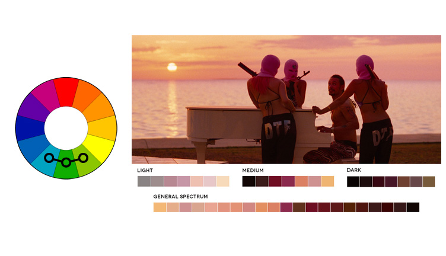

Los colores análogos son los que se encuentran cerca dentro del círculo cromático. Con esta combinación se logra mayor armonía, siempre que la elección de colores se mantenga dentro del esquema de colores cálidos o colores fríos. También puede funcionar si se elige un color predominante, otro que lo acompañe y el blanco o negro que acentúe a los otros dos. Este esquema funciona para los exteriores. Un ejemplo es Spring Breakers de Benoît Debie (2012).
